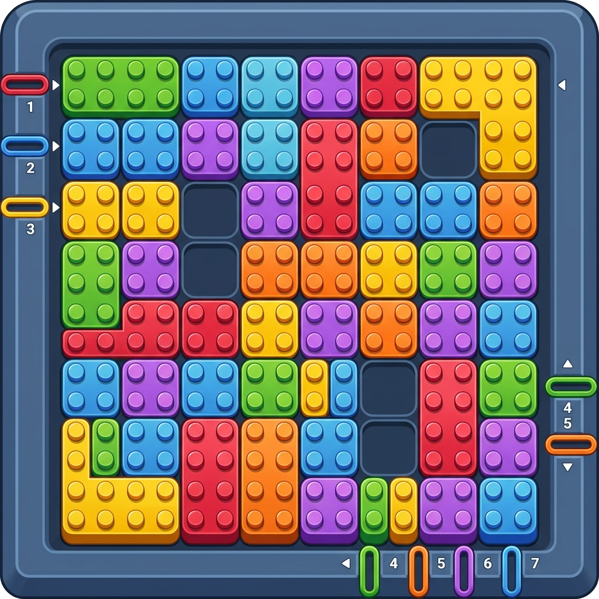
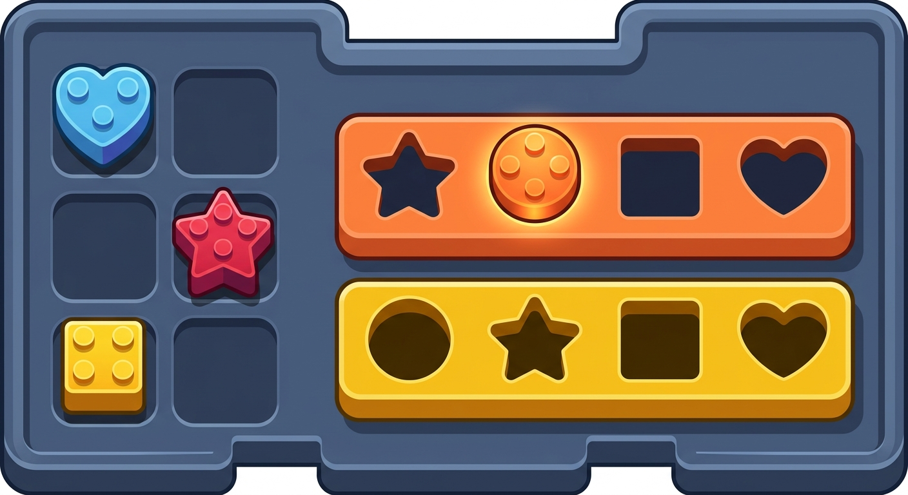
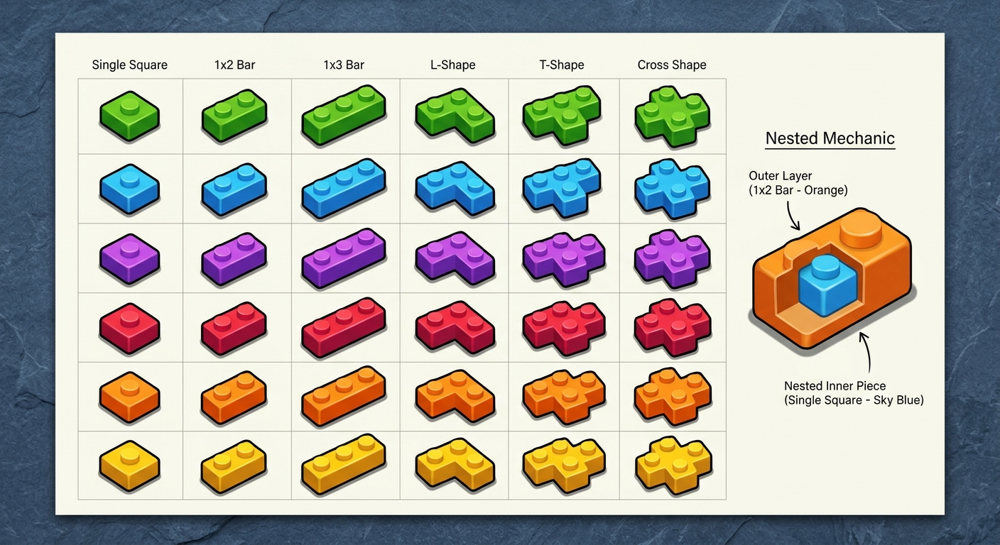
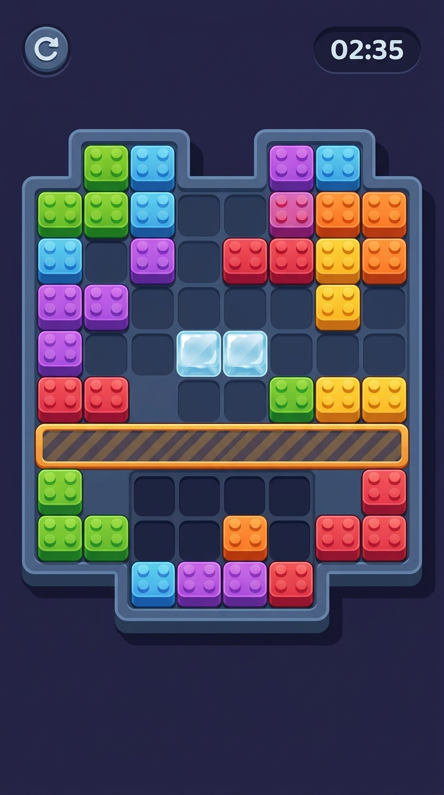

Sinh bằng skill gen-2d từ mô tả style trong ảnh bạn gửi: khối nhựa bóng có
núm studs, thành đứng tối ~15% chiều cao, board xám đá khung bo dày, ô trống là
hốc lõm tối hơn, đèn phẳng từ trên-trái.

1 · BoardBám sát ảnh gốc nhất: board kín khối màu, khe thoát có số ở rìa. Khe thoát là cơ chế của game khác — mình không có.

2 · Khay + lỗKhay là thanh nhựa có lỗ lõm theo hình (tròn/tim/sao/vuông), chốt hình có núm nằm chờ, một lỗ đã đầy đang sáng. Giữ nguyên cơ chế màu × hình.

3 · Bảng tra mảnh1 ô, 1×2, 1×3, L, T, chữ thập × 6 màu, kèm hình cắt lộ lớp lồng bên trong (shape-in-shape).

4 · Màn hìnhBố cục dọc đầy đủ: HUD, board có mấu, băng và cửa cuốn.